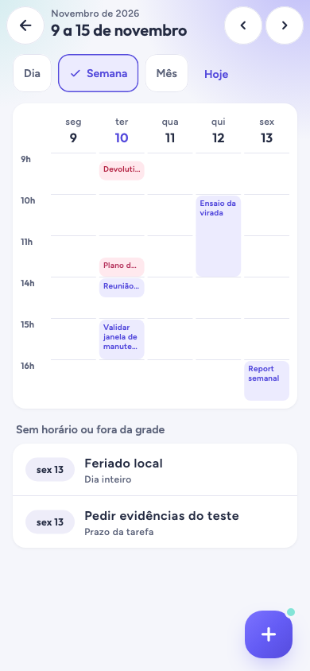
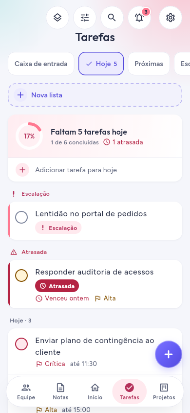
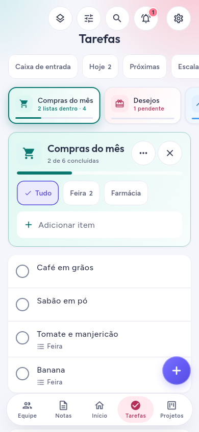
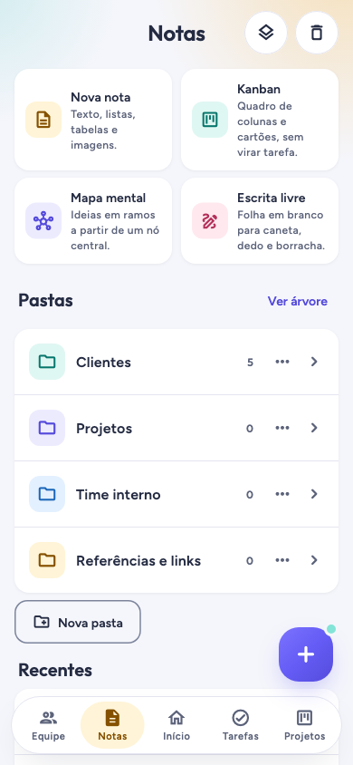
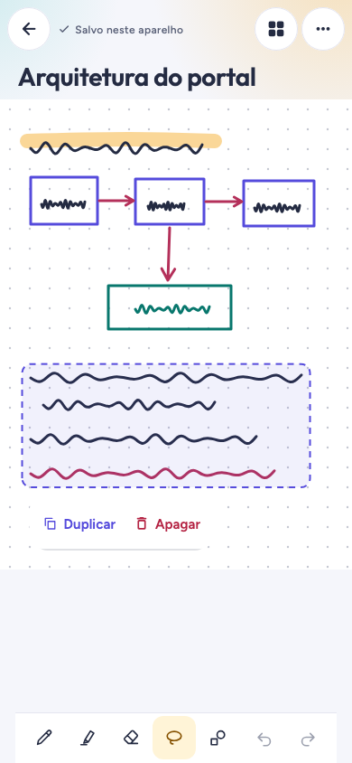
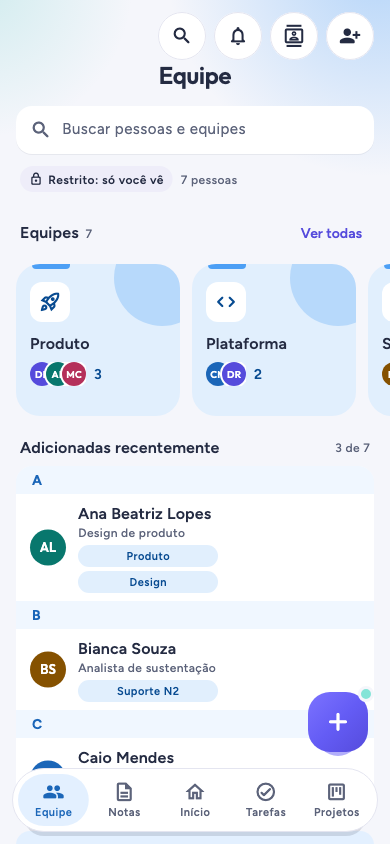
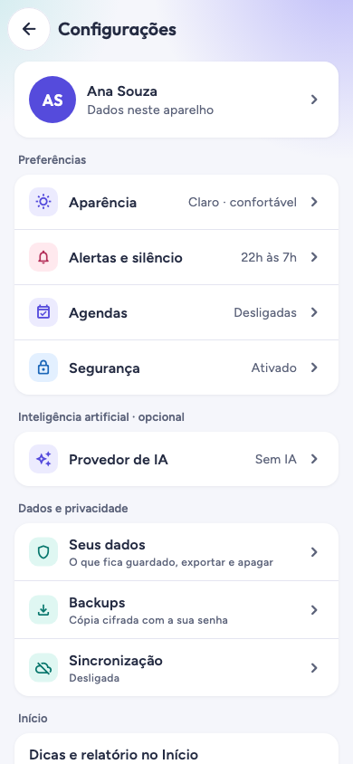
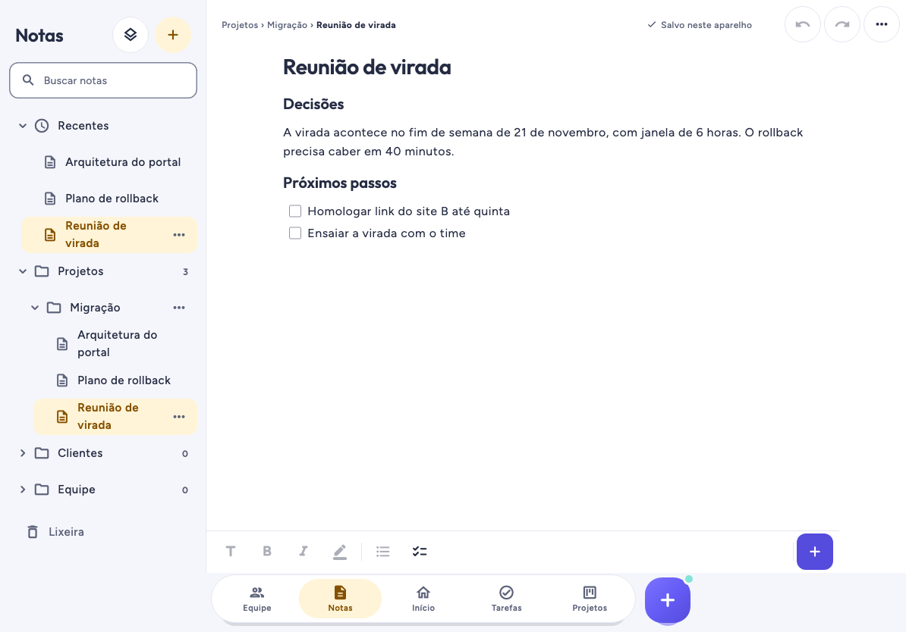

Índice
O Nuvii reúne num só app o que costuma ficar espalhado entre lista de tarefas, quadro de projetos, calendário, caderno de notas e planilhas, e liga cada informação à próxima ação. É um app individual: tudo é seu, e as pessoas da área Equipe são contatos que você acompanha, não contas de outros usuários.
Este manual percorre todas as telas, na ordem em que você as encontra. As capturas usam dados fictícios e podem mostrar detalhes de versões anteriores.
Itens marcados com em mudança foram alterados em 27 e 28/11/2026 e ainda podem mudar.
1. Primeiro acesso

O primeiro acesso leva cerca de dois minutos, e quase tudo pode ser pulado.
| Tela | Para que serve |
|---|---|
| Abertura | Mostra a marca enquanto o app prepara o banco cifrado no aparelho. |
| Entrar | Entrada com a conta Google ou Apple. A conta guarda o seu acesso e liga o Nuvii no celular, no tablet e no navegador. |
| Boas-vindas | Apresenta o app. Tem Começar e a opção de restaurar um backup. |
| Benefícios | Três cartões animados: capturar em segundos, não esquecer devolutivas e escrever do seu jeito. Pular vai direto ao perfil. |
| Seu perfil | Só o nome é obrigatório. Nascimento, CPF, sexo, e-mail e telefone são opcionais e ficam no aparelho. |
| Inteligência artificial | Aparece só quando o aparelho tem IA própria. Você escolhe usar a IA do aparelho (nada sai dele) ou seguir sem IA, que é o padrão. |
| Biometria | Pergunta se o Nuvii deve pedir Face ID, digital ou o código do aparelho ao abrir. Dá para mudar depois em Configurações > Segurança. |
| Sincronizar aparelho | Convite para trazer dados de outro aparelho pela sincronização. |
| Restaurar backup | Abre um arquivo .nuvii com a senha dele. Só funciona numa instalação limpa. |
| Primeiros passos | Guia de três minutos: o que mais pesa no seu dia, importar uma lista colando texto (cada linha vira tarefa), capturar uma tarefa como você fala e ligar dois rituais (resumo da manhã às 8h e revisão de sexta às 16h, no máximo 2 avisos por dia). |
Bloqueio. Com o bloqueio ligado, o Nuvii abre na tela "Nuvii bloqueado" e pede biometria ou o código do aparelho. Ele volta a pedir depois do tempo em segundo plano que você escolher.
2. Como navegar

Ilha de navegação. Na parte de baixo ficam as cinco áreas, nesta ordem: Equipe, Notas, Início, Tarefas e Projetos. Cada área guarda onde você estava.
Barra superior. É a mesma em todas as áreas e não rola: título da área, busca, conversas, sino de notificações e o seu perfil, que leva às Configurações. O que é próprio de uma área (contexto, filtros, lixeira, contatos) fica como atalho no começo do conteúdo.
Botão de ação rápida (+). O botão roxo abre um menu em leque com até cinco atalhos para criar: tarefa, nota à mão, nota, priorização, projeto, ideia, hábito, mapa mental, quadro Kanban ou falar com o assistente. Nenhum atalho é fixo: você escolhe quais e em que ordem em Configurações > Botão de ação rápida em mudança. Segurar o botão abre o assistente de voz, quando há IA configurada.
Contexto. Nas áreas há o atalho de contexto: Todos, Pessoal ou Trabalho. Ele filtra o que aparece; a escolha vale só neste aparelho.
Telas de detalhe. Tarefa, projeto, nota e pessoa abrem por cima da área. No celular, a seta volta; no tablet, o detalhe abre ao lado da lista (veja a seção 11).
3. Início

O Início responde "qual é a minha próxima ação?". No topo ficam a data, a saudação e uma frase que resume o dia, como "2 retornos pedem você agora".
Faixa de dias. Mostra a semana com pontos nos dias que têm itens. As setas trocam de semana e tocar num dia abre o calendário.
Percurso. Escolha Hoje, Semana ou Mês.
- Hoje: cada prioridade do dia vira um ponto no caminho; ao concluir, o traço avança e mostra "Agora:" com a próxima.
- Semana: o progresso de cada dia da semana e quantos retornos estão em aberto.
- Mês: o calendário do mês; tocar num dia mostra o que há nele.

Seções que aparecem quando há registros (sem registro, a seção some):
| Seção | O que mostra |
|---|---|
| Retornos | Priorizações com retorno vencendo ou atrasado, com o atalho Registrar contato. |
| Hoje | Tarefas prioritárias do dia. Dá para concluir na hora e fixar uma tarefa em Hoje. |
| Agenda | Compromissos do dia, incluindo as agendas do aparelho (Google, iCloud, Outlook) se você ligou. |
| Aniversários | Pessoas da Equipe que fazem aniversário. |
| Hábitos de hoje | Hábitos previstos para o dia, para marcar com um toque. |
| Saúde agora | Sono da noite e passos de hoje, quando a Saúde está ligada. |
| Projetos em foco | Projetos em execução, com o próximo marco. |
| Atividades de projetos | Quantas atividades de projeto estão com você, com o atalho Minhas atividades em mudança. |
| Dicas do dia | Sugestões calculadas no aparelho, sem IA, como "Você tem 1 tarefa atrasada". |
Comece por aqui. Sem nenhum registro, o Início mostra quatro atalhos: criar a primeira tarefa, acompanhar uma priorização, escrever uma nota e abrir um projeto.
Relatório da semana. Aberto pelas dicas, mostra tarefas concluídas e atrasadas, priorizações com contato e eventos, comparando com a semana anterior. Tudo é calculado no aparelho.
Calendário

Abre pela faixa de dias. Tem as visões Dia, Semana (em grade por hora) e Mês. Reúne prazos de tarefas, retornos de priorizações, eventos do Nuvii, aniversários e, se ligadas, as agendas do aparelho. Novo evento pede título, descrição opcional, dia inteiro ou início e fim.
4. Tarefas

A área de captura e execução. No alto ficam os filtros, que são visões das mesmas tarefas:
| Filtro | O que mostra |
|---|---|
| Caixa de entrada | O que você capturou sem data, para organizar depois. |
| Hoje | O resumo do dia (anel de progresso, quantas faltam e as atrasadas), depois as tarefas do dia e as atrasadas. |
| Próximas | Tarefas com data futura, agrupadas por dia, com o dia mais cheio marcado. |
| Priorizações | Acompanhamentos com cliente e prazo de retorno (veja abaixo). |
| Rotinas | Tarefas que se repetem por dia, semana ou mês. |
| Hábitos | Os hábitos e a marcação do dia. |
| Todas | Tudo o que você criou. |
Gestos. Deslize uma tarefa para a direita para concluir e para a esquerda para adiar um dia. Sempre há Desfazer.
Checklist. Uma tarefa com itens mostra o contador (por exemplo, 2/5) e abre os itens na própria lista. Ela só conclui com todos os itens marcados; o Nuvii oferece "Marcar todos e concluir".
Listas

Listas são pastas de tarefas com o nome que você quiser: compras, desejos, metas. Ficam numa faixa acima das tarefas.
- Nova lista cria uma lista; uma lista pode ter listas dentro (um nível).
- Na lista aberta, escreva no campo do topo e confirme para adicionar um item depois do outro.
- O menu da lista tem Editar, Nova lista dentro, Arquivar e Excluir. Excluir a lista não exclui as tarefas.
- Cada projeto tem uma lista automática com as tarefas dele.
Filtros e ordenação
O atalho Filtros abre a folha "Filtros e ordenação": ordenar por prazo, prioridade, criação ou ordem manual (segurar e arrastar); agrupar por dia, projeto ou pessoa; mostrar concluídas; prioridade mínima. Filtros salvos guardam combinações com nome, como "Aguardando terceiros".
Detalhe da tarefa

| Campo | Como funciona |
|---|---|
| Título e descrição | Editáveis no lugar; salvam sozinhos. |
| Estado | Caixa de entrada, A fazer, Em andamento, Aguardando (pede o motivo) ou Concluída. |
| Prazo | Data e, se quiser, horário. |
| Prioridade | Crítica, Alta, Normal, Baixa ou sem prioridade. |
| Responsável | Você ou um nome livre. |
| Lembrete | No horário, 15 min, 30 min, 1 h ou 1 dia antes. |
| Despertar | Toca como despertador na hora escolhida, mesmo no silencioso. |
| Projeto e lista | Liga a tarefa a um projeto ou a move para uma lista. |
| Repetir | Cria uma cópia aberta da tarefa, com ou sem data. |
| Checklist | Itens com marcar, desmarcar e remover. |
| Histórico | Tudo o que mudou na tarefa, com data e hora. |
No menu ficam Pausar ou Retomar e Excluir (vai para a lixeira e cancela o lembrete).
Priorizações

Uma priorização acompanha um caso com cliente e prazo de devolutiva, como um chamado crítico. A lista fica ordenada pelo próximo retorno.
- Criar: pelo botão +, a priorização nasce como rascunho só com o título. Completar acompanhamento pede cliente, ticket, próxima ação e próximo retorno para ativá-la.
- Fases: Recebida, Em triagem, Em tratamento, Monitoramento e Resolvida. Avançar fase muda a etapa.
- Cartões do detalhe: fase, próxima devolutiva (em dia, vence em, atrasada), resolução prevista e próxima ação.
- Registrar contato: canal (telefone, WhatsApp, e-mail, reunião, chat, outro), resumo do que foi combinado e o próximo retorno, que é obrigatório. O Nuvii só registra; nada é enviado ao cliente.
- Adiar retorno pede o motivo. Reabrir pede a fase, o motivo e a próxima ação.
- Acompanhamento: a linha do tempo com tudo o que aconteceu.
Rotinas

Rotinas geram uma ocorrência a cada repetição. A tela mostra Para hoje, Atrasadas e Todas as rotinas, com a contagem da semana.
- Nova rotina: título, repetição (diária, dias úteis, semanal com os dias, mensal num dia fixo ou no último dia), intervalo, horário ou dia inteiro e data de início.
- Em cada ocorrência: Concluir, Adiar (amanhã, em 2 dias, na próxima semana ou outra data) ou Pular.
- Editar pergunta se vale para esta e as futuras ou para a rotina toda. Encerrar série para de gerar ocorrências e mantém o histórico.
Hábitos

Hábitos são marcados dia a dia. Cada um tem nome, cor, ícone, datas opcionais de início e fim e uma meta. Com a Saúde ligada, um hábito pode marcar sozinho quando a meta de passos, sono ou treino é atingida; o Nuvii nunca desmarca. O detalhe do hábito mostra a sequência e o histórico. Hábitos arquivados ficam numa seção própria.
5. Projetos

Projetos é um planejador profissional que usa as mesmas tarefas da área Tarefas.
Portfólio
- Criar e idealizar (Estúdio): quatro atalhos no topo: Novo projeto (do zero), Modelos, Com IA e Melhorias.
- Visões: Lista ou Kanban. No Kanban, arraste um projeto entre colunas; para encerrar, o Nuvii pergunta se o projeto foi concluído ou cancelado.
- Grupos: Ativo e Pausado. Concluídos ficam em Entregas.
- Cartão do projeto: estado, saúde declarada (Sem avaliação, No prazo, Em risco, Bloqueado), próximo marco e progresso pelas tarefas. Sem tarefas, o cartão diz "Sem tarefas", nunca 100%.
- Minhas atividades: lista as atividades de projeto que estão com você (Comigo) e as que você delegou (Delegado), com atrasadas em destaque em mudança.

Modelos. Cinco planos prontos com marcos, tarefas e riscos: Lançamento de produto, Evento, Campanha de marketing, Melhoria de processo e Estudo ou certificação. Escolha, dê o nome e crie; tudo pode ser editado depois.
Novo projeto com IA. Descreva o que quer realizar; a IA propõe objetivo, marcos, tarefas e riscos, e você marca o que entra antes de criar. Dá para refazer com uma instrução, como "prazo de 6 semanas". Sem IA configurada, a tela explica como ligar.
Formulário do projeto. Nome, descrição, datas de início e fim ou prazo em dias (o fim é calculado), prioridade, responsável (Eu ou uma pessoa da Equipe), participantes (times e pessoas da Equipe) e contexto em mudança.
Pasta do projeto

Ao abrir um projeto você vê a pasta dele.
Cabeçalho em mudança: nome, descrição, prioridade, saúde, anel de progresso, período e dias que faltam, participantes, responsável e o resumo das tarefas (quantas concluídas e bloqueadas).
Visões das tarefas: Gantt, Lista, Kanban e Mapa. Todas mostram as mesmas tarefas.
| Visão | Como usar |
|---|---|
| Gantt | Barras no tempo. Toque num dia para criar uma tarefa; arraste tarefas da faixa "Sem data" para o calendário. Setas mostram dependências. |
| Lista | Lista de tarefas com checklist, para marcar o que foi feito. |
| Kanban | Colunas por estado. Pressione e arraste ou use "Mover para…". Bloquear e reabrir pedem motivo. |
| Mapa em mudança | Mapa vivo do projeto: o projeto como planeta com anel de progresso, tarefas como cápsulas, atividades como losangos e notas como páginas. Toque numa atividade para concluí-la (com confirmação); segure um item para focar nele. Tarefas não são concluídas pelo mapa. |


Ferramentas (grade de blocos): Saúde, marcos e entregas; Tabela; Cronograma; Riscos; Entregas; Histórico.
Planejador (painéis abaixo das ferramentas):
| Painel | O que mostra |
|---|---|
| Ritmo | Prazo decorrido contra trabalho concluído: Adiantado, No ritmo ou Atrasado. |
| Esta semana | Concluídas, que vencem em 7 dias, atrasadas e aguardando. Copiar status da semana gera um texto pronto. |
| Orçamento | Previsto, gasto e saldo, com lançamentos. Avisa quando passa do previsto. |
| Marcos | A trilha dos marcos com datas. |
| Equipe e carga | Tarefas abertas e atrasadas por responsável. |
| Matriz de riscos | Probabilidade × impacto em 3 × 3. |
| Próximos 7 dias | O que vence na semana. |
Documentos. Cada projeto guarda mapas mentais e notas. As notas aparecem também em Notas.
Menu do projeto: Editar projeto, Nova tarefa, Saúde, marcos e entregas, Status da semana, Imprimir ou PDF e as ações de IA (como Resumir projeto).
Tarefa do projeto
Abre em tela própria, com título, datas dentro do período do projeto, responsável, prioridade e checklist (as atividades).
- Depende de em mudança: escolha a tarefa anterior. A tarefa só pode começar e concluir depois que a anterior terminar; o Nuvii avisa quando as datas conflitam e oferece ajustar.
- Responsável pela atividade em mudança: cada item do checklist pode ficar com você (aparece no seu to-do em Tarefas), com outra pessoa (fica como delegado) ou com ninguém.
- Uma tarefa conclui sozinha quando todas as atividades terminam.
Saúde, marcos e entregas
A saúde é uma avaliação sua, não um cálculo: escolha o estado, escreva o motivo e a data. Marcos têm nome, data prevista e a opção "Obrigatório para concluir o projeto". O projeto também pode ser concluído, reaberto, pausado ou arquivado (arquivado fica só para leitura).
Tabela e Cronograma
- Tabela: colunas Tarefa, Status, Prazo e Prioridade. A coluna Tarefa fica fixa e o resto rola para o lado.
- Cronograma: progresso por marcos e a linha do tempo dos marcos e tarefas com data.
Riscos, impedimentos e decisões

- Impedimentos: tarefa bloqueada, motivo e desde quando. Cobrar retorno agenda a próxima cobrança; Registrar desbloqueio encerra.
- Riscos: probabilidade e impacto declarados por você, resposta planejada, responsável e prazo. A situação pode ser Aberto, Em mitigação, Aceito ou Materializado. Redeclarar graus guarda os anteriores no histórico.
- Decisões: o que foi decidido, justificativa, data e quem decidiu, com nota de origem opcional. Uma decisão pode ser substituída por outra ou revogada.
Entregas e Histórico
- Entregas: marcos e tarefas concluídos, do mais recente ao mais antigo, e os projetos concluídos.
- Histórico em mudança: tudo o que aconteceu no projeto, com filtros Tudo, Projeto, Tarefas, Atividades, Pessoas e Orçamento e documentos.
Melhorias contínuas
Ideias seguem da captura à medição do benefício: Capturada, Em avaliação, Aprovada, Em medição. Cada ideia tem problema, hipótese e avaliação. Pode ser adiada, descartada (com motivo) ou convertida em projeto, que guarda a origem. O benefício observado é registrado com valor, unidade, período e evidência.
6. Notas

A biblioteca começa com os atalhos para criar:
| Tipo | Para que serve |
|---|---|
| Nova nota | Texto, listas, tabelas e imagens. |
| Kanban | Quadro de colunas e cartões, sem virar tarefa. |
| Mapa mental | Ideias em ramos a partir de um nó central. |
| Escrita livre | Folha em branco para caneta, dedo e borracha. |
| Documento | Importa PDF, Word, Excel, PowerPoint e arquivos da Apple, com modo leitura. |
Depois vêm Favoritas (quando há alguma), Pastas e Recentes. Ver árvore mostra todas as pastas e subpastas.
Pastas. Cada pasta tem nome, cor e ícone e pode ter subpastas. Uma pasta privada esconde o conteúdo até você confirmar com Face ID, biometria ou o código do aparelho. Use "Mover para…" para reorganizar.
Editor

- Texto rico com títulos, listas, checklist, links, tabelas, imagens e anexos.
- Inserir abre os blocos; a tabela ganha linhas e colunas pela barra própria.
- Vínculos liga a nota a outra nota, tarefa, projeto ou ideia; quem cita a nota aparece em "Citada por".
- Converter trecho transforma o texto selecionado em tarefa, com prévia antes de criar.
- Encontrar devolutivas procura promessas de retorno na nota e propõe tarefas de cobrança.
- Exportar nota em Markdown ou PDF; Imprimir ou PDF abre a janela do sistema.
- Se o app fechar no meio da edição, o Nuvii oferece o rascunho mais novo.
Escrita à mão

Caneta, dedo e borracha numa folha em branco ou num bloco dentro da nota. No iPad, funciona com a Apple Pencil.
Documentos importados
O arquivo fica só no aparelho onde foi importado, nunca na nuvem, na sincronização ou no backup. Sincronizam apenas o título, as palavras-chave e a pasta. Em outro aparelho, a tela pede para escolher o mesmo arquivo. A busca também procura no conteúdo dos documentos.
Lixeira
Notas e pastas excluídas ficam 30 dias na lixeira. Dá para restaurar ou excluir de vez.
7. Equipe

A Equipe é a sua agenda de pessoas com quem você trabalha. Só você vê esse conteúdo, e o Nuvii não cria ranking, nota nem comparação de pessoas.
Tela inicial da Equipe:
- Busca por pessoas e equipes.
- Sua semana com a equipe: 1:1s da semana, feedbacks a rever, metas de PDI no prazo e lembretes (como faz tempo sem conversa ou aniversário).
- Equipes: pastas coloridas com ícone; uma pessoa pode estar em várias.
- Adicionadas recentemente e Delegadas (tarefas que você passou e entram na pauta da próxima 1:1).
- Linha do tempo: feedbacks, 1:1s, conquistas e metas do PDI em ordem.
- Atalhos Contatos (lista A–Z com filtros por equipe) e Adicionar.
Nova pessoa. Nome e referência (cargo ou função) são obrigatórios. Aniversário, telefones, e-mails e equipes são opcionais. Importar dos contatos sugere quem está na agenda do aparelho e preenche os dados; os contatos nunca saem do aparelho. Também dá para importar vários de uma vez.
Perfil da pessoa

| Aba | O que guarda |
|---|---|
| Resumo | Nascimento, telefones, e-mails, equipes, responsabilidades e registros recentes. |
| Notas | Anotações livres sobre a pessoa. |
| Resultados | Reconhecimentos e conquistas, com fatos e evidências. |
| Feedbacks | Contexto, comportamento observado, impacto e próximo passo. |
| 1:1 | Pauta (com sugestões do que ficou aberto), notas da conversa e ações acordadas, que viram tarefas. |
| PDI | Plano de desenvolvimento: rascunho, ativação (pede responsável, resultado, prazo e checkpoint), atividades, checkpoints e histórico de revisões. |
| Metas | Metas individuais com valor informado por você e histórico de evolução. |
Anotações privadas ficam só no aparelho, abrem com Face ID e não sincronizam nem entram em backup.
Menu da pessoa: Abrir perfil, Feedback rápido (situação, comportamento, impacto e combinado), Agendar 1:1, Delegar tarefa, Mais ações, Editar e Excluir.
8. Busca, notificações, conversas e assistente
Busca

Busca em tudo, direto do aparelho e sem internet: tarefas, priorizações, projetos, notas e documentos, eventos, pessoas, pastas e listas. Escreva como fala, por exemplo "tarefas atrasadas" ou "reunião com Ana amanhã"; a resposta rápida aparece no topo. Filtros por tipo ajudam a refinar, e as buscas recentes ficam guardadas.
Perguntar ao Nuvii junta o que você já anotou sobre um assunto e responde com fontes numeradas (precisa de IA).
Notificações

A central reúne o que pede ação (retornos vencendo, tarefas atrasadas, prioridades alta e crítica) e o histórico do dia. Cada item tem ações rápidas como Registrar contato, Adiar e Abrir. Na tela bloqueada o aviso é genérico, sem título nem nome de cliente.
Conversas
Chat com quem também usa o Nuvii, pelo número de celular, em todos os planos.
- Confirme o número mandando uma mensagem pronta pelo WhatsApp ou Telegram, sem SMS.
- Nova conversa busca por nome ou número; também há grupos.
- Uma mensagem pode virar tarefa com um toque.
- Nos ajustes do chat: trocar o número, ser encontrado pelo número e bloqueados.
Assistente
Diga ou escreva o que precisa, por exemplo "tarefa ligar para o cliente amanhã às 9". O assistente mostra o que vai criar (tarefa, priorização, projeto, nota, ideia ou evento) e só salva com a sua confirmação. Ele só cria itens novos e precisa de uma IA configurada. O Nuvii não grava nem envia áudio.
Ações de IA
Nas notas, projetos e priorizações, o menu IA oferece resumir, melhorar texto, extrair tarefas, resumir projeto e preparar devolutiva. Antes de qualquer envio você vê o texto exato e para onde vai.
9. Configurações

Abra pelo seu perfil na barra superior.
| Item | O que faz |
|---|---|
| Perfil | Nome, foto opcional e dados pessoais, todos no aparelho. |
| Conta Nuvii | Conta Google ou Apple ligada, aparelhos conectados, Nuvii no computador (ler QR code), assistentes de IA conectados por MCP, baixar dados da conta, sair e excluir a conta. |
| Nuvii Pro | Assinatura mensal: sincronização pelo Nuvii Cloud em tempo real, workspace Trabalho, Nuvii web, API, integrações e assistentes de IA. Assinar, restaurar e gerenciar. A cobrança começa em 07/12/2026. |
| Aparência | Tema claro, escuro ou do sistema; cinco estilos (Traço Vivo, Clássico, Futurista, Neobrutalismo, Asséptico); densidade; reduzir movimento. |
| Idioma e região | Português, inglês ou espanhol; região (formatos e feriados); início da semana; relógio de 12 ou 24 horas. |
| Botão de ação rápida | Mostrar ou esconder o botão, escolher até cinco atalhos e a ordem. |
| Alertas e silêncio | O que aparece no aviso (completo, tipo e hora, ou discreto), quando avisar, resumo do dia, planejar amanhã, revisão da semana, Não perturbe, só no expediente e máximo de avisos por dia. |
| Agendas | Mostrar no Nuvii as agendas do aparelho. |
| Saúde | Ler passos, sono e treino para marcar hábitos. |
| Segurança | Bloquear o app com biometria ou código e escolher depois de quanto tempo. |
| Provedor de IA | Sem IA (padrão), IA do aparelho, Nuvii Cloud (Pro, só no Trabalho), OpenRouter com chave própria ou seu servidor (Ollama, LM Studio, compatível). Mostra o que sai e o que nunca sai, e a permissão por finalidade. |
| Dicas e relatório no Início | Liga as dicas e, opcionalmente, reescreve com IA. |
| Seus dados | Os dados do perfil e para que servem; exportar e apagar o perfil. Dentro dela, Exportar meus dados gera uma cópia legível em JSON, CSV e Markdown; o conteúdo de pessoas só entra se você marcar. |
| Backups | Cópia cifrada com a sua senha, lembrete, quantos guardar, verificar e restaurar. |
| Sincronização | iCloud ou Google Drive, cifrada de ponta a ponta, ou Nuvii Cloud no Pro. Aparelhos, opção de incluir Equipe e pastas privadas, versões guardadas de conflitos e apagar dados da nuvem. |
| Sobre | Versão e licenças de código aberto. |
10. Nuvii no computador
- No computador, abra app.nuvii.com.br. A página mostra um QR code.
- No celular, vá em Configurações > Conta Nuvii > Nuvii no computador e leia o QR code.
- Confirme no celular o número que aparece no navegador.
O web não tem login nem senha próprios. Marque "confiar neste navegador" para continuar conectado por até 60 dias; em computador público, não marque. Navegadores confiáveis podem ser removidos pelo celular. O Nuvii web faz parte do Nuvii Pro.
11. Tablets, dobráveis e teclado

- Tablet e celular: a ilha de navegação fica embaixo, com o botão +.
- Computador e web: a navegação muda pela largura da janela, de ilha para barra lateral estreita e depois para barra lateral completa.
- Lista e detalhe lado a lado: em telas largas, Tarefas, Projetos e Equipe abrem o detalhe ao lado da lista. Notas mostra a árvore de pastas à esquerda e o editor à direita.
- Início largo: ganha indicadores por área (tarefas, retornos, compromissos, projetos em risco).
- Dobráveis: semiaberto com a dobra na vertical, Tarefas e Projetos põem a lista de um lado e o detalhe do outro.

Atalhos de teclado (⌘ no Mac e iPad, Ctrl no resto):
| Atalho | Ação |
|---|---|
| ⌘N | Criar (abre o menu do botão +) |
| ⌘F | Buscar |
| ⌘1 a ⌘5 | Equipe, Notas, Início, Tarefas, Projetos |
12. Privacidade em resumo
- Os dados ficam num banco cifrado no aparelho.
- A IA é opcional e desligada por padrão. Equipe, feedbacks, PDI e os dados do perfil nunca vão para a IA.
- A sincronização pelo iCloud ou Google Drive é cifrada de ponta a ponta.
- Documentos importados em Notas nunca saem do aparelho.
- Notificações na tela bloqueada não mostram títulos nem nomes.